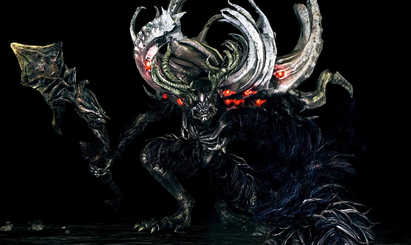
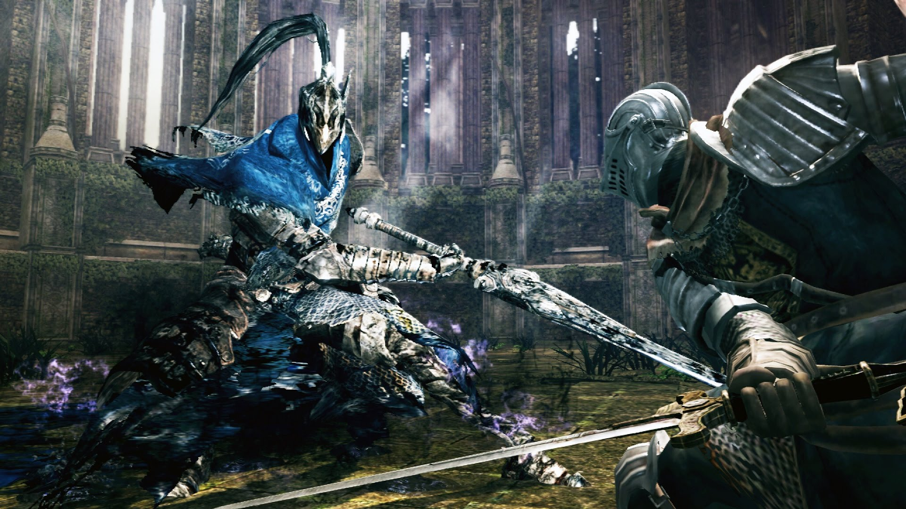
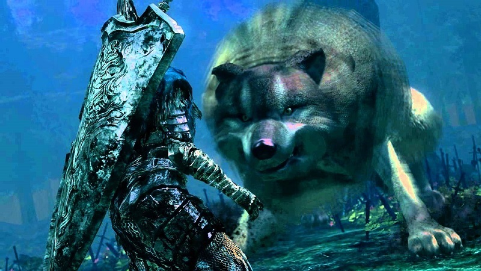

 The people of Oolacile were fooled by a serpent, resulting in the upturning of Manus's grave and inciting his wrath. He is the cause of the Abyss, which threatened to swallow all of Oolacile. Manus was once human and became the Father of the Abyss after his humanity went wild, eternally seeking his precious Broken Pendant. After his defeat, his soul split apart and became fragmented. Eventually some of these soul fragments became self-aware and formed into their own entities. The fragments known to have done this became Nashandra, Elana, Nadalia and Alsanna.
"If thine wish is to succeed poor Artorias, and challenge the spread of the Dark, then thou must face Manus, Father of the Abyss. The Dark emanates from Manus himself. Even if this land shall expire, thou may be able to prevent further corrosion... But even so, one day the flames will fade, and only Dark will remain. And even a legend such as thineself can do nothing to stop that."— Hawkeye Gough
 Sir Knight Artorias was one of the four Knights of Gwyn, the commanding knights of Lord Gwyn's army. Artorias had an unbendable will of steel, which both helped, and fed, his hatred for servants of the Dark, particularly the Darkwraiths of Kaathe. Lord Gwyn bequeathed him with a custom-made ring, the Wolf Ring, to assist in his already unmatched ability to wield a greatsword. When in New Londo, Artorias discovered the ability of abysswalking, earning him his title, Artorias the Abysswalker, and allowed him to enter The Abyss, the home of the Darkwraiths and the Four Kings themselves. At some unspecified time in the past, when Oolacile was attacked by the Abyss, Artorias traveled to Oolacile to rescue Princess Dusk of Oolacile. Artorias, deeply marked by the Abyss, and feeling his end was near, gave his shield which served as a magic aura, to protect his loyal battle-companion, a young Sif, from the Abyss. Later, he had become fully corrupted by the abyss. Some time after, an unknown hero (the player), who traveled to the past, killed Artorias, releasing him from his wretched state. This also preserved his honour, because none would ever known what really happened to Artorias; he was instead believed to have died while facing the Abyss, instead of being corrupted to fulfil the Abyss's goals and killed by an Undead. The hero continued on to kill the dark creatures of the Abyss, and saved Sif, who was being held captive. To thank the hero, Sif awarded them the Cleansing Greatshield.
Great Grey Wolf Sif is the wolf companion of Sir Artorias, the Abysswalker. After Artorias passed away, Sif became the guardian of Artorias' grave in the Darkroot Garden. Sif wields Artorias' Greatsword and uses some of his moves in combat. A younger Sif appears in the additional content. Sif accompanied Artorias on his quest to save Oolacile from the spread of the Abyss. But Artorias and Sif are eventually overrun by Humanity Phantoms, so the former leaves his shield to erect a barrier around Sif.
